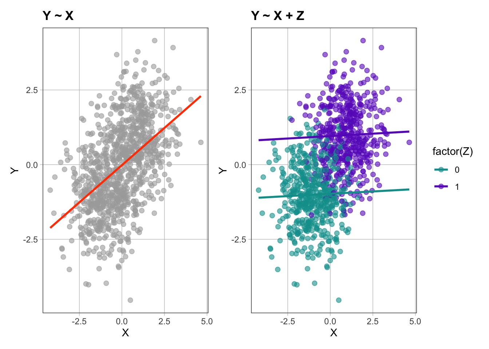

library(coursekata)
library(modelsummary)
library(patchwork)Elemental confounds examples using R
Introduction
This notebook shows the R version of some of the code used during the lecture of week 10 (2024-03-05, Chapter 8: Multivariate models and causal inference) by Angela Radulescu.
Setup environment
Load required packages:
Define the rbern function to generate random samples from a Bernoulli distribution (R only provides the related rbinom function):
rbern <- function(n, prob = 0.5) rbinom(n, size = 1, prob)Define the inv_logit function to apply the inverse logit transformation:
inv_logit <- function(x) {
p <- 1 / (1 + exp(-x))
p <- ifelse(x == Inf, 1, p)
p
}Set the seed of the random number generator:
# set the random seed
set.seed(1)Set the default number of samples to generate in the following Monte Carlo simulations:
# number of samples to generate in the Monte Carlo simulations
n <- 1000The Fork
\(Z\) is a common cause of \(X\) and \(Y\)
This elemental causal structure induces a statistical association between \(X\) and \(Y\):
- \(Y \not \mathrel{\unicode{x2AEB}} X\)
No statistical association between \(X\) and \(Y\) when conditioning/stratifying by \(Z\):
- \(Y \mathrel{\unicode{x2AEB}} X \mid Z\)
graph TD;
Z-->X;
Z-->Y;
See daggity causal diagram at https://dagitty.net/mYFQcF5hd
Monte Carlo simulation of observations from a DGP with the elemental causal structure shown above:
Z <- rbern(n)
X <- rnorm(n, mean = 2*Z-1)
Y <- rnorm(n, mean = 2*Z-1)Group the simulated data together in a tibble/dataframe for subsequent regression analysis and plotting:
d <- tibble(X, Y, Z)Fit two regression models to the simulated data:
m1to estimate the unconditional statistical association between \(X\) and \(Y\):- \(Y \sim X\)
m2to estimate the statistical association between \(X\) and \(Y\) conditional on \(Z\):- \(Y \sim X + Z\)
m1 <- lm(Y ~ X, data = d)
m2 <- lm(Y ~ X + Z, data = d)and print the estimate (\(b_1\)) and p-value of the statistical association (i.e., slope/regression coefficient \(\beta_1\)) between \(X\) and \(Y\), unconditional as well as conditional on \(Z\):
modelsummary(list("Y ~ X" = m1, "Y ~ X + Z" = m2),
coef_map = "X", stars = TRUE, statistic = NULL, gof_map = NA)| Y ~ X | Y ~ X + Z | |
|---|---|---|
| X | 0.499*** | 0.032 |
| + p < 0.1, * p < 0.05, ** p < 0.01, *** p < 0.001 |
Same as the above but in a graphical display:
gf_point(Y ~ X, title = "Y ~ X", color = "darkgray", data = d) %>%
gf_lm(color = "orangered") +
gf_point(Y ~ X, title = "Y ~ X + Z", color = ~ factor(Z), data = d) %>%
gf_lm()
The Pipe
\(Z\) is a mediator of the effect of \(X\) on \(Y\)
This elemental causal structure induces a statistical association between \(X\) and \(Y\):
- \(Y \not \mathrel{\unicode{x2AEB}} X\)
No statistical association between \(X\) and \(Y\) when conditioning/stratifying by \(Z\):
- \(Y \mathrel{\unicode{x2AEB}} X \mid Z\)
graph LR;
X-->Z;
Z-->Y;
See daggity causal diagram at https://dagitty.net/mUXESSQ8P
Monte Carlo simulation of observations from a DGP with the elemental causal structure shown above:
X <- rnorm(n)
Z <- rbern(n, prob = inv_logit(X))
Y <- rnorm(n, mean = 2*Z-1)Group the simulated data together in a tibble/dataframe for subsequent regression analysis and plotting:
d <- tibble(X, Y, Z)Fit two regression models to the simulated data:
m1to estimate the unconditional statistical association between \(X\) and \(Y\):- \(Y \sim X\)
m2to estimate the statistical association between \(X\) and \(Y\) conditional on \(Z\):- \(Y \sim X + Z\)
m1 <- lm(Y ~ X, data = d)
m2 <- lm(Y ~ X + Z, data = d)and print the estimate (\(b_1\)) and p-value of the statistical association (i.e., slope/regression coefficient \(\beta_1\)) between \(X\) and \(Y\), unconditional as well as conditional on \(Z\):
modelsummary(list("Y ~ X" = m1, "Y ~ X + Z" = m2),
coef_map = "X", stars = TRUE, statistic = NULL, gof_map = NA)| Y ~ X | Y ~ X + Z | |
|---|---|---|
| X | 0.493*** | 0.061+ |
| + p < 0.1, * p < 0.05, ** p < 0.01, *** p < 0.001 |
Same as the above but in a graphical display:
gf_point(Y ~ X, title = "Y ~ X", color = "darkgray", data = d) %>%
gf_lm(color = "orangered") +
gf_point(Y ~ X, title = "Y ~ X + Z", color = ~ factor(Z), data = d) %>%
gf_lm()The Collider
\(Z\) is a common effect of \(X\) and \(Y\)
This elemental causal structure does NOT induce a statistical association between \(X\) and \(Y\):
- \(Y \mathrel{\unicode{x2AEB}} X\)
But it does when conditioning/stratifying by \(Z\):
- \(Y \not \mathrel{\unicode{x2AEB}} X \mid Z\)
graph TD;
X-->Z;
Y-->Z;
See daggity causal diagram at https://dagitty.net/mA5oHsPKq
Monte Carlo simulation of observations from a DGP with the elemental causal structure shown above:
X <- rnorm(n)
Y <- rnorm(n)
Z <- rbern(n, prob = inv_logit(2*X+2*Y-2))Group the simulated data together in a tibble/dataframe for subsequent regression analysis and plotting:
d <- tibble(X, Y, Z)Fit two regression models to the simulated data:
m1to estimate the unconditional statistical association between \(X\) and \(Y\):- \(Y \sim X\)
m2to estimate the statistical association between \(X\) and \(Y\) conditional on \(Z\):- \(Y \sim X + Z\)
m1 <- lm(Y ~ X, data = d)
m2 <- lm(Y ~ X + Z, data = d)and print the estimate (\(b_1\)) and p-value of the statistical association (i.e., slope/regression coefficient \(\beta_1\)) between \(X\) and \(Y\), unconditional as well as conditional on \(Z\):
modelsummary(list("Y ~ X" = m1, "Y ~ X + Z" = m2),
coef_map = "X", stars = TRUE, statistic = NULL, gof_map = NA)| Y ~ X | Y ~ X + Z | |
|---|---|---|
| X | −0.025 | −0.301*** |
| + p < 0.1, * p < 0.05, ** p < 0.01, *** p < 0.001 |
Same as the above but in a graphical display:
gf_point(Y ~ X, title = "Y ~ X", color = "darkgray", data = d) %>%
gf_lm(color = "orangered") +
gf_point(Y ~ X, title = "Y ~ X + Z", color = ~ factor(Z), data = d) %>%
gf_lm()References
Print environment
sessioninfo::session_info()─ Session info ───────────────────────────────────────────────────────────────
setting value
version R version 4.3.3 (2024-02-29)
os macOS Sonoma 14.4
system aarch64, darwin20
ui X11
language (EN)
collate en_US.UTF-8
ctype en_US.UTF-8
tz America/New_York
date 2024-03-17
pandoc 3.1.12.2 @ /opt/homebrew/bin/ (via rmarkdown)
─ Packages ───────────────────────────────────────────────────────────────────
package * version date (UTC) lib source
backports 1.4.1 2021-12-13 [1] CRAN (R 4.3.0)
bayestestR 0.13.2 2024-02-12 [1] CRAN (R 4.3.1)
callr 3.7.5 2024-02-19 [1] CRAN (R 4.3.1)
checkmate 2.3.1 2023-12-04 [1] CRAN (R 4.3.1)
cli 3.6.2 2023-12-11 [1] CRAN (R 4.3.1)
coda 0.19-4.1 2024-01-31 [1] CRAN (R 4.3.1)
codetools 0.2-19 2023-02-01 [1] CRAN (R 4.3.3)
colorspace 2.1-0 2023-01-23 [1] CRAN (R 4.3.0)
coursekata * 0.15.0 2023-12-14 [1] CRAN (R 4.3.1)
datawizard 0.9.1 2023-12-21 [1] CRAN (R 4.3.1)
digest 0.6.35 2024-03-11 [1] CRAN (R 4.3.1)
dplyr * 1.1.4 2023-11-17 [1] CRAN (R 4.3.1)
dslabs * 0.8.0 2024-03-01 [1] CRAN (R 4.3.1)
effectsize 0.8.6 2023-09-14 [1] CRAN (R 4.3.0)
emmeans 1.10.0 2024-01-23 [1] CRAN (R 4.3.1)
estimability 1.5 2024-02-20 [1] CRAN (R 4.3.1)
evaluate 0.23 2023-11-01 [1] CRAN (R 4.3.1)
fansi 1.0.6 2023-12-08 [1] CRAN (R 4.3.1)
farver 2.1.1 2022-07-06 [1] CRAN (R 4.3.0)
fastmap 1.1.1 2023-02-24 [1] CRAN (R 4.3.0)
fivethirtyeight * 0.6.2 2021-10-07 [1] CRAN (R 4.3.0)
fivethirtyeightdata * 0.1.0 2024-01-06 [1] Github (fivethirtyeightdata/fivethirtyeightdata@8de5de4)
forcats 1.0.0 2023-01-29 [1] CRAN (R 4.3.0)
future 1.33.1 2023-12-22 [1] CRAN (R 4.3.1)
future.apply 1.11.1 2023-12-21 [1] CRAN (R 4.3.1)
generics 0.1.3 2022-07-05 [1] CRAN (R 4.3.0)
ggformula * 0.12.0 2023-11-09 [1] CRAN (R 4.3.1)
ggplot2 * 3.5.0 2024-02-23 [1] CRAN (R 4.3.1)
ggridges 0.5.6 2024-01-23 [1] CRAN (R 4.3.1)
globals 0.16.3 2024-03-08 [1] CRAN (R 4.3.1)
glue 1.7.0 2024-01-09 [1] CRAN (R 4.3.1)
gtable 0.3.4 2023-08-21 [1] CRAN (R 4.3.0)
haven 2.5.4 2023-11-30 [1] CRAN (R 4.3.1)
hms 1.1.3 2023-03-21 [1] CRAN (R 4.3.0)
htmltools 0.5.7 2023-11-03 [1] CRAN (R 4.3.1)
htmlwidgets 1.6.4 2023-12-06 [1] CRAN (R 4.3.1)
insight 0.19.8 2024-01-31 [1] CRAN (R 4.3.1)
jsonlite 1.8.8 2023-12-04 [1] CRAN (R 4.3.1)
kableExtra 1.4.0 2024-01-24 [1] CRAN (R 4.3.1)
knitr 1.45 2023-10-30 [1] CRAN (R 4.3.1)
labeling 0.4.3 2023-08-29 [1] CRAN (R 4.3.0)
labelled 2.12.0 2023-06-21 [1] CRAN (R 4.3.0)
lattice * 0.22-5 2023-10-24 [1] CRAN (R 4.3.3)
lifecycle 1.0.4 2023-11-07 [1] CRAN (R 4.3.1)
listenv 0.9.1 2024-01-29 [1] CRAN (R 4.3.1)
Lock5withR * 1.2.2 2015-12-22 [1] CRAN (R 4.3.0)
lsr * 0.5.2 2021-12-01 [1] CRAN (R 4.3.0)
magrittr 2.0.3 2022-03-30 [1] CRAN (R 4.3.0)
MASS 7.3-60.0.1 2024-01-13 [1] CRAN (R 4.3.3)
Matrix * 1.6-5 2024-01-11 [1] CRAN (R 4.3.3)
Metrics * 0.1.4 2018-07-09 [1] CRAN (R 4.3.0)
modelsummary * 1.4.5 2024-02-17 [1] CRAN (R 4.3.1)
mosaic * 1.9.1 2024-02-23 [1] CRAN (R 4.3.1)
mosaicCore 0.9.4.0 2023-11-05 [1] CRAN (R 4.3.1)
mosaicData * 0.20.4 2023-11-05 [1] CRAN (R 4.3.1)
multcomp 1.4-25 2023-06-20 [1] CRAN (R 4.3.0)
munsell 0.5.0 2018-06-12 [1] CRAN (R 4.3.0)
mvtnorm 1.2-4 2023-11-27 [1] CRAN (R 4.3.1)
pak 0.7.1 2023-12-11 [1] CRAN (R 4.3.1)
palmerpenguins 0.1.1 2022-08-15 [1] CRAN (R 4.3.0)
parallelly 1.37.1 2024-02-29 [1] CRAN (R 4.3.1)
parameters 0.21.5 2024-02-07 [1] CRAN (R 4.3.1)
patchwork * 1.2.0 2024-01-08 [1] CRAN (R 4.3.1)
pillar 1.9.0 2023-03-22 [1] CRAN (R 4.3.0)
pkgconfig 2.0.3 2019-09-22 [1] CRAN (R 4.3.0)
processx 3.8.3 2023-12-10 [1] CRAN (R 4.3.1)
ps 1.7.6 2024-01-18 [1] CRAN (R 4.3.1)
purrr 1.0.2 2023-08-10 [1] CRAN (R 4.3.0)
R6 2.5.1 2021-08-19 [1] CRAN (R 4.3.0)
rlang 1.1.3 2024-01-10 [1] CRAN (R 4.3.1)
rmarkdown 2.26 2024-03-05 [1] CRAN (R 4.3.1)
rstudioapi 0.15.0 2023-07-07 [1] CRAN (R 4.3.0)
sandwich 3.1-0 2023-12-11 [1] CRAN (R 4.3.1)
scales 1.3.0 2023-11-28 [1] CRAN (R 4.3.1)
sessioninfo 1.2.2 2021-12-06 [1] CRAN (R 4.3.0)
stringi 1.8.3 2023-12-11 [1] CRAN (R 4.3.1)
stringr 1.5.1 2023-11-14 [1] CRAN (R 4.3.1)
supernova * 3.0.0 2024-02-07 [1] CRAN (R 4.3.1)
survival 3.5-8 2024-02-14 [1] CRAN (R 4.3.3)
svglite 2.1.3 2023-12-08 [1] CRAN (R 4.3.1)
systemfonts 1.0.6 2024-03-07 [1] CRAN (R 4.3.1)
tables 0.9.17 2023-05-02 [1] CRAN (R 4.3.0)
TH.data 1.1-2 2023-04-17 [1] CRAN (R 4.3.0)
tibble 3.2.1 2023-03-20 [1] CRAN (R 4.3.0)
tidyr 1.3.1 2024-01-24 [1] CRAN (R 4.3.1)
tidyselect 1.2.1 2024-03-11 [1] CRAN (R 4.3.1)
utf8 1.2.4 2023-10-22 [1] CRAN (R 4.3.1)
vctrs 0.6.5 2023-12-01 [1] CRAN (R 4.3.1)
viridisLite 0.4.2 2023-05-02 [1] CRAN (R 4.3.0)
withr 3.0.0 2024-01-16 [1] CRAN (R 4.3.1)
xfun 0.42 2024-02-08 [1] CRAN (R 4.3.1)
xml2 1.3.6 2023-12-04 [1] CRAN (R 4.3.1)
xtable 1.8-4 2019-04-21 [1] CRAN (R 4.3.0)
yaml 2.3.8 2023-12-11 [1] CRAN (R 4.3.1)
zoo 1.8-12 2023-04-13 [1] CRAN (R 4.3.0)
[1] /Library/Frameworks/R.framework/Versions/4.3-arm64/Resources/library
──────────────────────────────────────────────────────────────────────────────